🖼️ Galeri Diagram — Absensi Fingerprint Pesantren
29 diagram · render Mermaid v10 · resolusi 2× (retina) · Bahasa Indonesia
📊 02-SYSTEM-DIAGRAMS — Sistem Terpilih (dengan Web)
DAD Level 0 — Konteks (pelaku + sistem + saluran notifikasi)
02-SYSTEM-DIAGRAMS_1.png · 139.0 KB

DAD Level 1 — Dekomposisi 4 proses utama
02-SYSTEM-DIAGRAMS_2.png · 212.3 KB

Sekuens — Pemindaian absensi (alur normal)
02-SYSTEM-DIAGRAMS_3.png · 147.7 KB

Sekuens — Mode polling saat perangkat luring
02-SYSTEM-DIAGRAMS_4.png · 134.8 KB

Bagan alir — Logika pengaturan notifikasi
02-SYSTEM-DIAGRAMS_5.png · 134.0 KB

ERD — 9 entitas inti + relasi
02-SYSTEM-DIAGRAMS_6.png · 235.0 KB

📡 03-NO-WEB-SOLUTION — Tanpa Web (Telegram + Sheets)
Arsitektur sederhana: 6 FP → API → DB → Telegram + Sheets
03-NO-WEB-SOLUTION_1.png · 179.4 KB

DAD Level 0 sederhana (tanpa web)
03-NO-WEB-SOLUTION_2.png · 74.7 KB

Sekuens scan + sinkron Sheets
03-NO-WEB-SOLUTION_3.png · 126.2 KB

🎨 04-MULTI-CONCEPT-4-SCHEMAS — 4 Konsep (masing-masing lengkap)
Konsep 1 — DAD L0: Minimalis WhatsApp
04-MULTI-CONCEPT-4-SCHEMAS_1.png · 69.0 KB
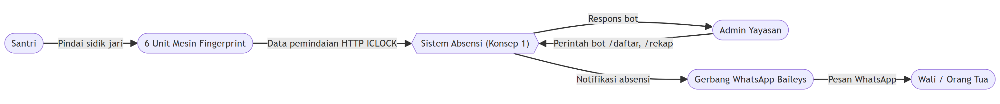
Konsep 1 — DAD L1: Dekomposisi 4 proses
04-MULTI-CONCEPT-4-SCHEMAS_2.png · 139.2 KB
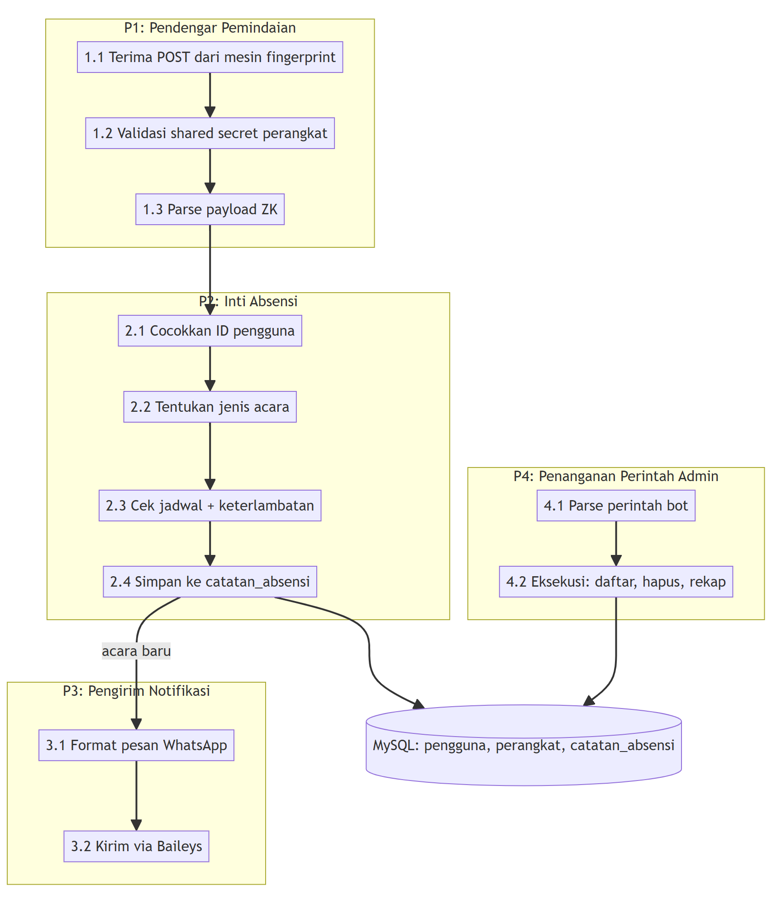
Konsep 1 — Sekuens: pemindaian + perintah admin
04-MULTI-CONCEPT-4-SCHEMAS_3.png · 144.5 KB
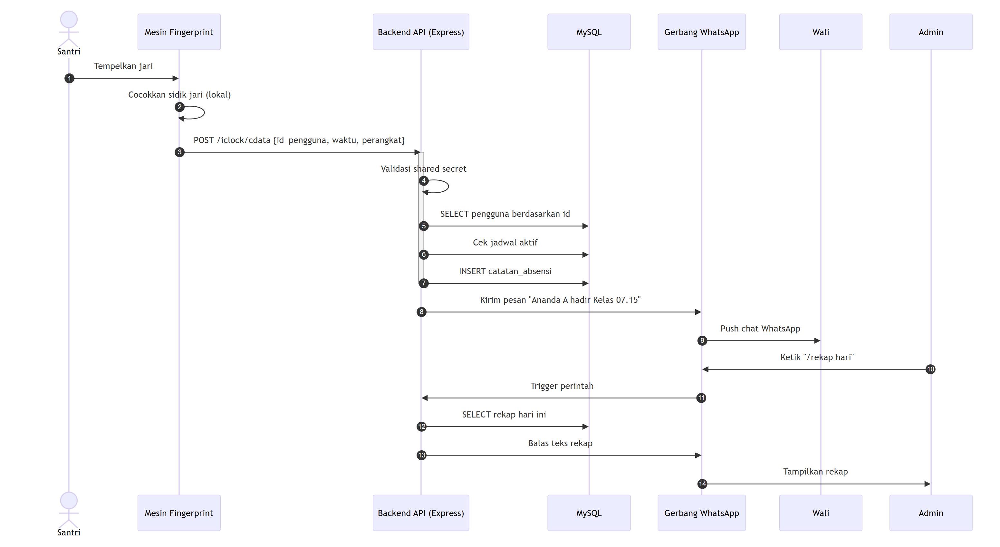
Konsep 1 — ERD versi sederhana
04-MULTI-CONCEPT-4-SCHEMAS_4.png · 91.3 KB
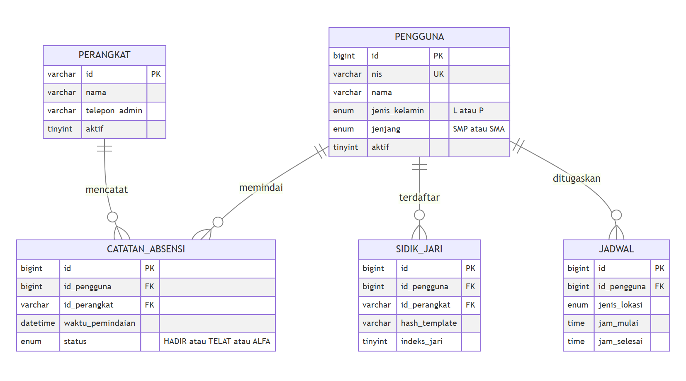
Konsep 2 — DAD L0: Minimalis Telegram
04-MULTI-CONCEPT-4-SCHEMAS_5.png · 79.7 KB
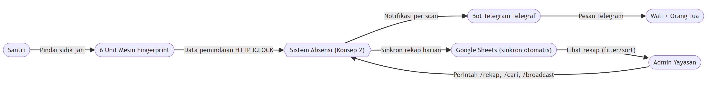
Konsep 2 — DAD L1: 5 proses + sinkron Sheets
04-MULTI-CONCEPT-4-SCHEMAS_6.png · 160.9 KB
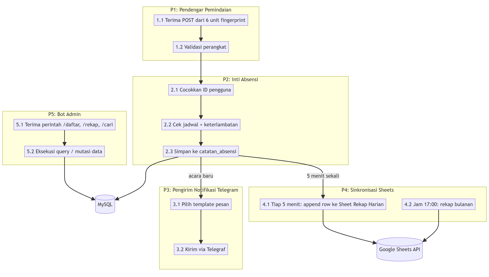
Konsep 2 — Sekuens: scan + sinkron rekap
04-MULTI-CONCEPT-4-SCHEMAS_7.png · 127.0 KB
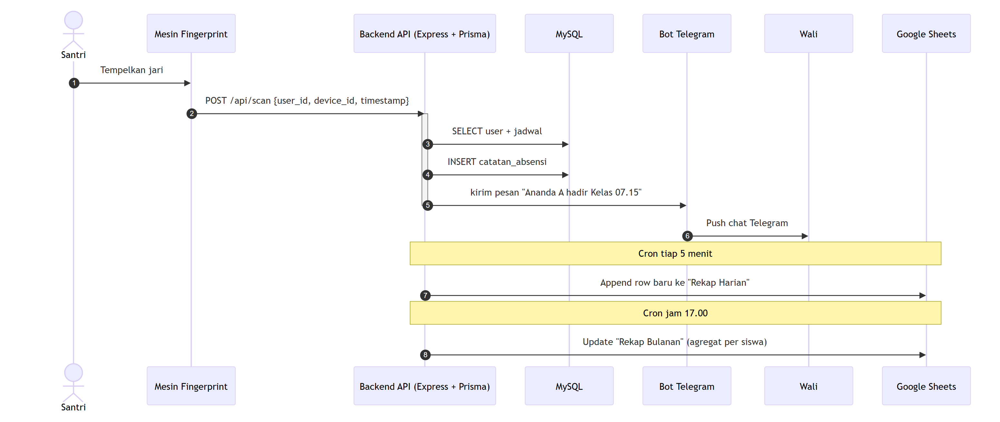
Konsep 2 — ERD versi standar
04-MULTI-CONCEPT-4-SCHEMAS_8.png · 202.2 KB
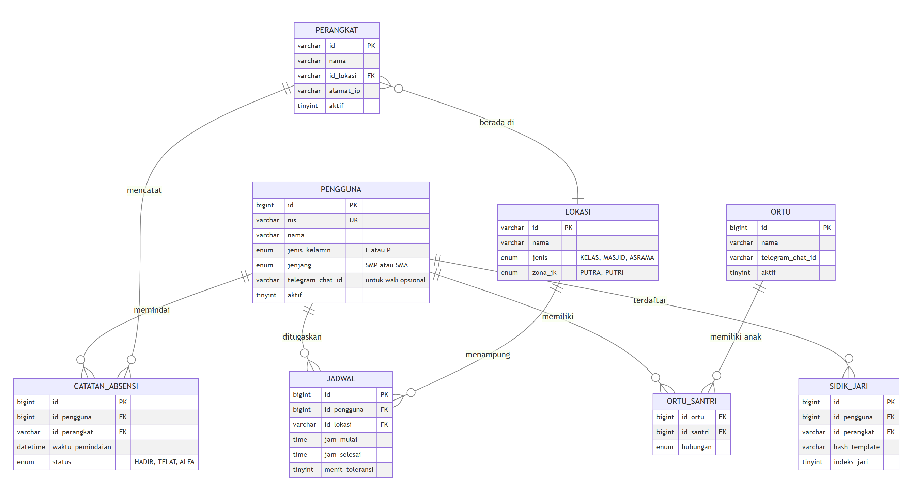
Konsep 3 — DAD L0: Ringan Web + Telegram
04-MULTI-CONCEPT-4-SCHEMAS_9.png · 106.3 KB
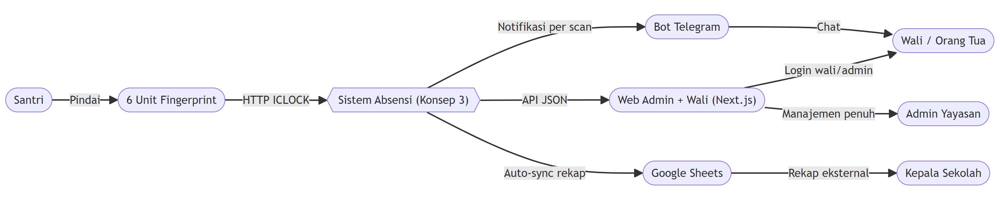
Konsep 3 — DAD L1: 5 proses + API web
04-MULTI-CONCEPT-4-SCHEMAS_10.png · 162.7 KB
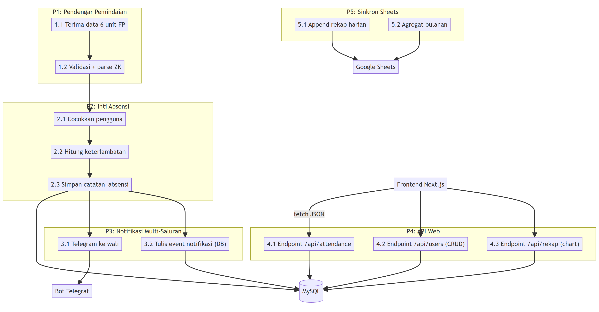
Konsep 3 — Sekuens: scan + akses web
04-MULTI-CONCEPT-4-SCHEMAS_11.png · 165.6 KB
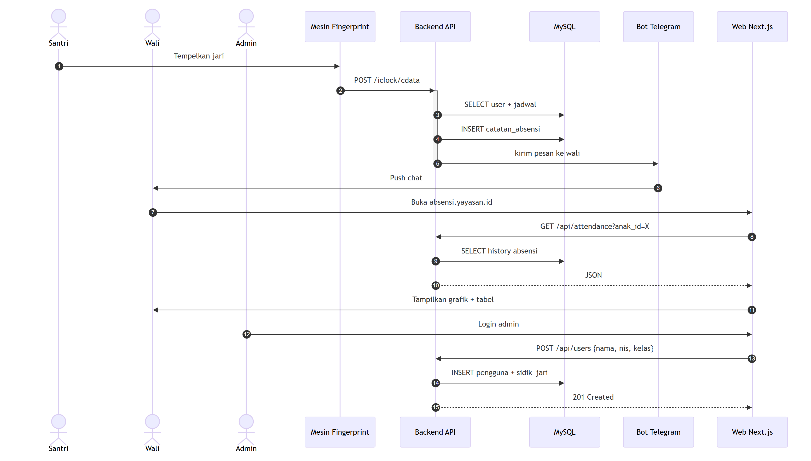
Konsep 3 — ERD dengan modul web
04-MULTI-CONCEPT-4-SCHEMAS_12.png · 221.2 KB
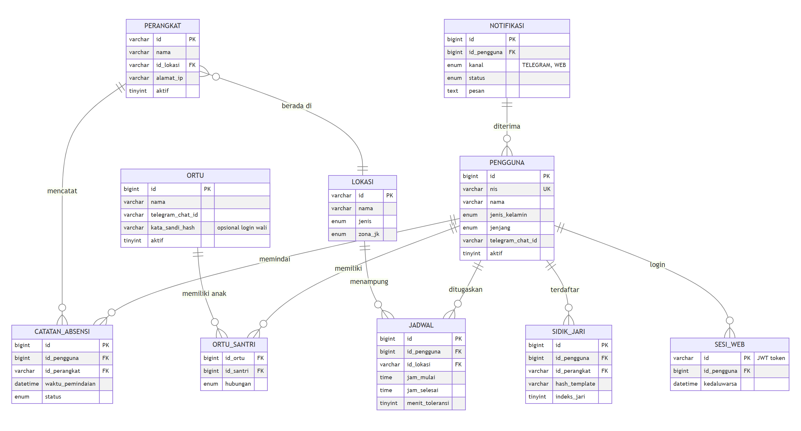
Konsep 4 — DAD L0: Standar multi-saluran
04-MULTI-CONCEPT-4-SCHEMAS_13.png · 170.0 KB
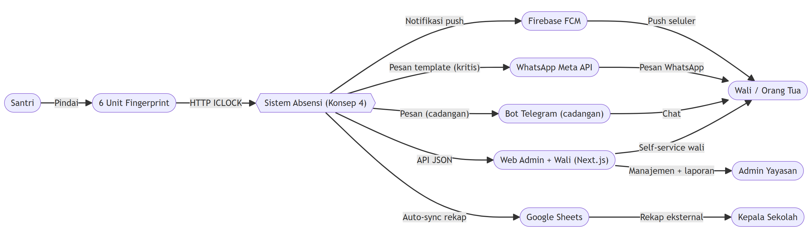
Konsep 4 — DAD L1: 6 proses + notifikasi hibrida
04-MULTI-CONCEPT-4-SCHEMAS_14.png · 208.8 KB
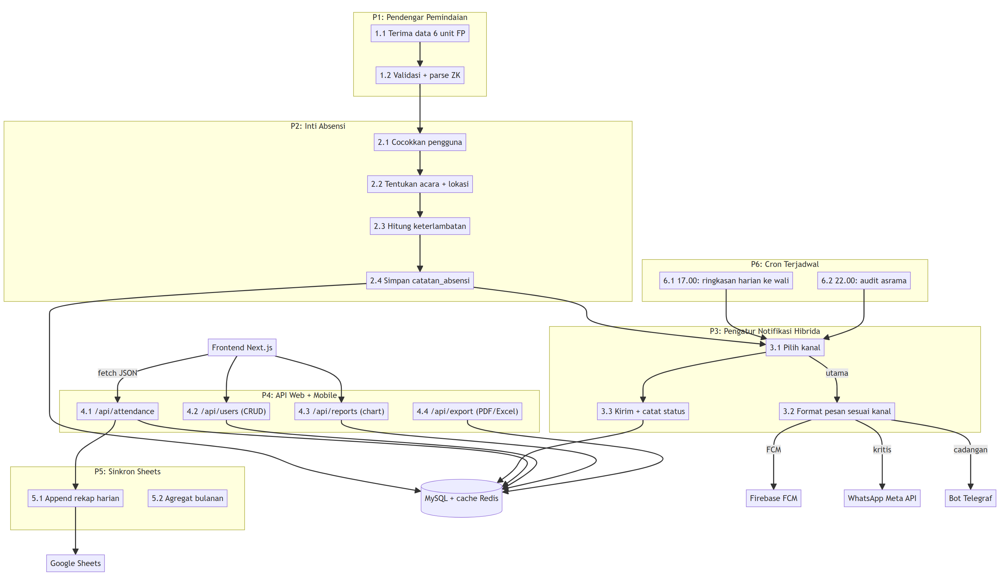
Konsep 4 — Sekuens: scan + notifikasi hibrida
04-MULTI-CONCEPT-4-SCHEMAS_15.png · 165.7 KB
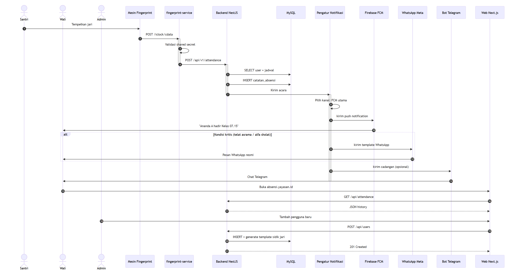
Konsep 4 — ERD lengkap dengan notifikasi
04-MULTI-CONCEPT-4-SCHEMAS_16.png · 306.5 KB
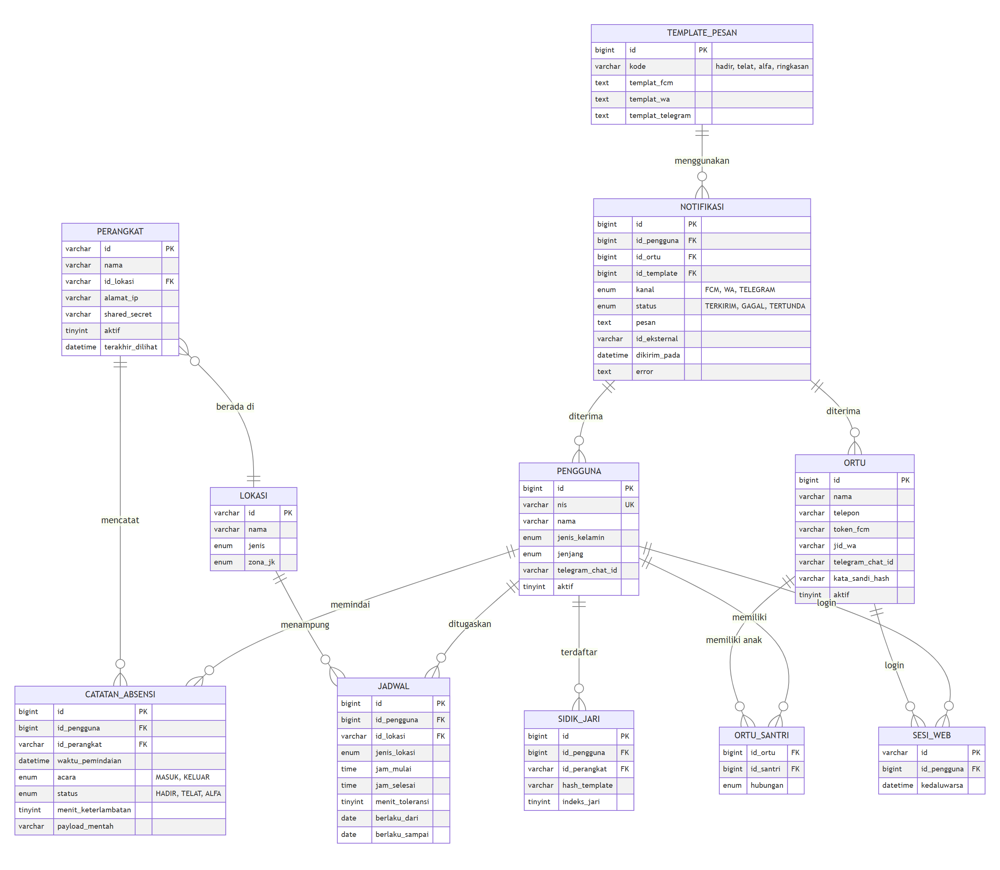
🌐 SERVER_NETWORK_DEPLOYMENT — 3 Skenario Server
Skenario A: Offline-Only (lokal NAT, tanpa IP publik)
SERVER_NETWORK_DEPLOYMENT_1.png · 79.7 KB

Skenario B: Hybrid + Cloudflare Tunnel Zero Trust
SERVER_NETWORK_DEPLOYMENT_2.png · 118.5 KB

Skenario C: Cloud-Native (VPS + IP publik)
SERVER_NETWORK_DEPLOYMENT_3.png · 186.7 KB

Bagan alir pemilihan skenario
SERVER_NETWORK_DEPLOYMENT_4.png · 87.4 KB